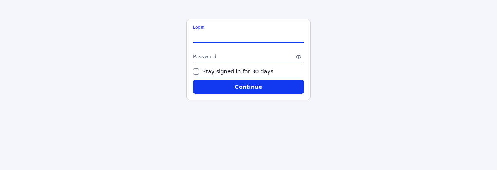

Accounts
The portal has two kinds of account: the superadmin and the users.
The superadmin is the one account that is not in the database. Its login and its password come from an environment variable or from a file. The configuration names the source (see Secrets):
authentication { superadmin_login_file = "/run/secrets/portal_superadmin_login" superadmin_password_file = "/run/secrets/portal_superadmin_password" # The key of the TOTP secrets (64 hexadecimal characters). The policy `authentication.mfa` is "optional" by default. totp_key_file = "/run/secrets/portal_totp_key"}The superadmin login has 1 to 64 characters. It has no upper-case letter, no space, no control character and no colon. The program refuses a login that breaks these rules at start. The sign-in form compares logins in lower case. The program does not change the login.
At start, the program reads the password with a size limit. It hashes the password once with Argon2id and then erases the plaintext from memory. The superadmin can see and open everything. The superadmin is the only account that can manage the other accounts. An account of the database or a block user with the superadmin login stops the start.
The superadmin adds and deletes users from the settings pages (the gear of the launcher). A user has a list of grants (see Grants and the gate). The database stores the Argon2id hash of each password. The database is the SQLite file storage.database, or PostgreSQL. The request path reads an in-memory copy and never waits on the database. A new user has no grant, and a new password ends the sessions of that account.
Each sign-in attempt runs exactly one Argon2 check, for any login name. The check uses the superadmin hash, the hash of the account, or a dummy hash. The failure message is the same in all cases. Neither the time nor the text shows whether a login exists. See Design: sign-in protection.
The sign-in page

The sign-in page asks for a login and a password. The path /auth/login is a contract with Traefik ForwardAuth and does not change.
A visitor can come from a protected address. A band at the top of the card then shows the path of the page that the visitor asked for. The band shows the path for every page. Without a protected address, the card has no band.
The form has a signed token, a trap field and the box "Remember me". A second step asks for a code when the account has a second factor. Design: sign-in protection explains each measure, what it stops and what it does not stop.
A script that uses curl for the sign-in must read the field token of the page. It must wait one second and then post the field with the other fields.
Sessions
A successful sign-in creates a 256-bit random opaque session ID. The browser receives only this random value, encoded in unpadded base64url. The token contains no identity, no expiry time, no claim and no signed data. The cookie is not a JWT.
The server stores a SHA-256 digest of the token, the expiry time, the time of last use and a hash of the client binding. With SQLite, this data is in bounded memory. With PostgreSQL, it is in the shared database. A logout deletes the session on the server at once. It does not only delete the cookie.
The session cookie has these forms:
__Host-portal=<opaque random token>; Path=/; HttpOnly; SameSite=Strict; Secure (HTTPS)portal=<opaque random token>; Path=/; HttpOnly; SameSite=Strict (plain HTTP)The key session.cookie_name sets the name (the default is __Host-portal). The key session.same_site sets Strict (the default) or Lax. Over plain HTTP the name has no __Host- prefix and the cookie has no Secure attribute, because browsers refuse them there. The portal reads the scheme of each request from X-Forwarded-Proto. See Traefik and TLS.
The cookie has no Max-Age: the browser deletes it at the end of its session. The server ends the session after session.ttl (24 hours by default), also when the session is in use. A session ends after session.idle_timeout (30 minutes by default) without use.
Binding and limits
The key session.bind ties a session to the client. The default ip_user_agent ties it to the client address and the User-Agent of the sign-in. The other values are user_agent and none. A request with another binding is refused. The refusal does not change the session, so a thief cannot end the session of the owner.
The client address comes from X-Forwarded-For only when the TCP peer is in server.trusted_proxies. The server then reads the header from the right and takes the first address that is not a trusted proxy. For any other peer, the client address is the address of the peer.
session.max_active_sessions (4096 by default) limits the store. When the store is full, a good password does not create a session, and the server answers 503. It never removes an arbitrary live session. One account has at most session.max_sessions_per_account sessions (16 by default). A new sign-in at this number ends the session of that account that was used least recently. An impersonated session does not count.
Remember me
The sign-in form has a box Stay signed in for 30 days, at the left edge of the card under the password field. The box is not ticked at first. The number of days comes from session.remember_ttl. The box needs no script, and a click on the label ticks it.
| Box not ticked | Box ticked | |
|---|---|---|
| Life of the session from the sign-in | session.ttl, default 24 hours | session.remember_ttl, default 30 days |
| Idle time | session.idle_timeout, default 30 minutes | session.remember_idle_timeout, default 7 days |
| Cookie | No Max-Age: the browser deletes it when it ends its session | Max-Age is the life of the session |
Each life is absolute. A session that is in use still ends at the end of its life. The idle time of a remembered session is separate. Without it, the idle time of 30 minutes would end a remembered session at each pause. The value of session.remember_idle_timeout is at least session.idle_timeout and at most session.remember_ttl. The server refuses the file at start when the keys contradict each other.
- Set
session.remember = falseto remove the box. The form then has no box, and the server ignores the field. - A remembered session is in the shared store like any other session. With PostgreSQL, it is valid on every instance and survives a restart. With SQLite, the sessions are in memory, so a restart ends them.
- A logout, a deleted account, a new password, a new superadmin login and End all sessions end a remembered session. They end any other session in the same way.
Log in asnever gives the remembered rule. Back to superadmin opens a session that is not remembered either.- The page after a refused sign-in never shows the box ticked. The answer to a refusal thus does not depend on what the client sent.
- The Activity list marks a remembered session with the badge "kept", and a session that used the second factor with the badge "2fa".
- With the default
ip_user_agent, a change of address ends the use of a remembered session, for example on a mobile network. The person then starts a new session with the password.user_agentis the usual choice for sites where people keep remembered sessions on phones. It is less strict: the session works from any address with the same User-Agent.
A persistent cookie is the usual risk of this option (OWASP Session Management Cheat Sheet). Use these measures:
- Keep
session.remember_ttlas short as the site accepts. The maximum is 90 days. - Use HTTPS, so that the cookie has the
Secureattribute. - The portal does not yet ask for a new sign-in before a sensitive action in a remembered session. Examples are to create a key, to use
Log in asand to change a password.
Log in as
The superadmin can open a session as another account with Log in as. Back to superadmin returns to the session of the superadmin. After a switch, Max-Age is the time that is left. The new session ends when the session of the password sign-in would have ended. A switch never gives a fresh session.ttl.
A session of Log in as needs no code of the second factor of the target account, and it has no page Security. A session of the superadmin is valid only with the superadmin credentials that opened it. This rule also holds for an impersonated session.
A new superadmin login, password or session secret ends the sessions of the superadmin on every instance. It ends the impersonated sessions too.
End all sessions
The superadmin can end every session from the page Users. The route is POST /auth/users/end-sessions. It has the checks of the other account routes: the Origin check, the anti-CSRF token and the superadmin in its own right. It also needs the field confirm=end-all-sessions. Each use writes the audit event sessions_ended. Both ways end the sessions of the superadmin too.
The command portal end-sessions --config FILE does the same on a PostgreSQL database. With SQLite, the sessions are in the memory of the process, so the command refuses to run: restart the portal. With a shared database, an instance can accept a cached session for up to 5 seconds after the end.
Sessions with PostgreSQL
With PostgreSQL, the sessions are rows of the shared database. Each instance keeps a copy of a session for 5 seconds at most. A logout on another instance reaches the copy within this time.
The database can be unreachable. An instance then still accepts a session that it checked less than 2 minutes ago. Thus a failover of the database does not end every session. A sign-in fails closed.
The row also holds a stamp of the credential that opened the session and, for the superadmin, a generation of the superadmin credentials. Several instances describes what the instances share.
Session signing secret
The session secret signs the return targets of the authentication and the anti-CSRF tokens of the forms. It also signs the token of the sign-in form and the token between the two steps of the second factor. It keys the random names of the sign-in page. The key session.secret_mode has two values.
ephemeral (the default) makes a new 32-byte secret from the random generator of the system at each start. The file must not give a secret in this mode. The process erases the secret from memory when it stops.
session { secret_mode = "provided" secret_file = "/run/secrets/portal_session_secret" # or: secret_env = "PORTAL_SESSION_SECRET"}provided takes the secret from session.secret_env or from session.secret_file. Give exactly one of the two. The secret has at least 32 bytes. The program reads it with a size limit and removes the last line end from the content of a file. The program refuses a secret in clear text in the file, and it refuses the example value that the repository publishes.
With SQLite, the sessions stay in the memory of the process in both modes. A restart therefore ends all sessions, and provided does not change this. With PostgreSQL, the sessions are in the database, and provided is required. All instances must sign with the same key. Else one instance refuses a form that another instance served. The program refuses ephemeral with the postgres block.
A new session secret ends the sessions of the superadmin and the impersonated sessions. After the theft of a superadmin cookie, change the superadmin password or the session secret: the change ends the stolen session on every instance.
Second factor (TOTP)
An account can have a second factor: a code of 6 digits from an authenticator app. The code follows RFC 6238 (HMAC-SHA-1, a step of 30 seconds). Google Authenticator, Aegis, 1Password and the other usual apps read it. The portal accepts the code of the current step and of the step before and after it. Passkeys (WebAuthn) are not part of this version. They resist a false page, and TOTP does not.
The key authentication.mfa sets the policy:
| Value | Effect |
|---|---|
off | The portal shows no page of the second factor and never asks for a code. The key authentication.totp_key must not be set. |
optional (default) | Each account chooses to enable it in the page Security. An account that did not choose uses the password only. |
required | Each account, the superadmin too, must enrol after the password step. The session starts only after the enrolment. The account cannot disable it. |
Any value other than off needs the key authentication.totp_key_env or authentication.totp_key_file. It has 64 hexadecimal characters: make it with openssl rand -hex 32. All instances use the same key. The program stops at start in three cases. The key is absent, its format is wrong, or it is not the key that sealed the secrets of the database. The default optional therefore needs a key in each configuration.
No separate key sets the policy of the superadmin. Under optional, the sign-in of the superadmin stays a password sign-in. Scripts that use the superadmin password thus stay valid. Use required to force the second factor.
Sign-in. The first step is the sign-in form. A wrong password, an unknown login and a failed check of the form give the same answer as without a second factor. When the password is right and the account has a second factor, the portal opens no session. It shows a card with one field for the code and a section "Use a recovery code". The state between the two steps is a signed token in a hidden field, and it lives 5 minutes.
The token is bound to the account, to the client, to the page and to the box "Remember me". It is also bound to the password and to the second factor that the account had at the password step. A new password, a reset of the second factor or a new superadmin credential sends the person back to the password step. No instance keeps a state, so the second step can go to another instance. Only a person who knows the password reaches the second step. This is accepted.
Enrolment. The page Security (the gear, for each account) shows the state. Turn on shows a QR code as inline SVG markup and the secret in groups of four characters. The QR code holds the otpauth:// link. The page does not print the link, because the link holds the name of the instance. An enrolment page stays valid for 15 minutes.
The person types the first code. The portal then shows 10 recovery codes one time (abcde-fghij) with a Copy button that needs script. The page works without script.
The portal stores the secret sealed with AES-256-GCM, and the recovery codes as keyed hashes. A recovery code works one time. New recovery codes and Turn off ask for the password and a code.
Lost phone. Use a recovery code. A person with no code left asks the superadmin to reset the second factor. The page of the account in the tab Access has the button Reset the two-factor, with a confirmation in place. The reset ends the sessions of the account, as a new password does. Activity shows the event.
The superadmin has no account above it. Use portal reset-two-factor --config FILE --user LOGIN.
With SQLite, the command works only while the portal is stopped. With PostgreSQL, it also ends the sessions of the account. The option --all removes every second factor and the check value of the key. A new authentication.totp_key can then serve. The command writes one audit event with the actor cli.
Brute force. A wrong code counts against the account in the database, so every instance adds to the count. Five wrong codes in 10 minutes lock the second step of the account for 5 minutes. The answer is status 429 with Retry-After. No lock is permanent. A lock needs the password first, so an anonymous attacker cannot lock an account.
One pending token takes 5 wrong codes. The next wrong code sends the person back to the password step.
The address has its own budget, which is the limiter of the sign-in with the keys security.login_attempts_per_ip, security.login_window and security.login_lockout. The counter portal_login_attempts_total{result="mfa_failure"} counts the wrong codes. The log line login_failed has reason=mfa. The portal records the last accepted time step of each account in the database. A code of the same step or of an older step is refused, so a code is good one time.
Sessions. A session records mfa like remembered. Keys (mcp_, api_), the enrollment codes of the phones and the ForwardAuth path do not change: a session exists only after the full sign-in. The portal does not yet ask for a fresh second factor before a sensitive action.
Dependencies. The QR code needs the crate qrcode (pure Rust, feature svg only). HMAC-SHA-1 and AES-256-GCM come from aws-lc-rs, which the portal already uses.
Schema. The second factor changed the schema version 8 in place and has no migration. An earlier build of version 8 made a database without these objects: the tables totp_credentials, totp_recovery and totp_key_check, and the column mfa of sessions_log. With PostgreSQL, the column mfa and the column credential of sessions are also absent. The portal stops at start and names the absent objects. Make a new database, or add the objects by hand.
Security model lists what the second factor stops and what it does not stop.
Protection against password guessing
Two independent controls run before Argon2. Each control is local to the process. With several instances, each instance has its own counters, so an attacker has up to N times the budget with N instances.
- A per-IP limiter for failed passwords.
- A global limiter for failed passwords, against distributed attacks.
The global limiter has two budgets of the same size. One budget is for the superadmin login. The other budget is for all other logins. Failures against other logins thus never refuse the sign-in of the superadmin. Failures against the superadmin login lock out only the superadmin.
While a budget is locked out, the answer tells whether a typed login is the superadmin login. The superadmin login is not a secret: the identity tokens carry it.
Only failed password checks use the failure budgets. A successful sign-in does not clear the per-IP failures, because they can name other logins. They expire after security.login_window. A successful sign-in does not clear the global failure history either. This is intentional.
security.max_concurrent_password_checks separately limits the number of Argon2 checks that run at the same time. The server also reads at most server.max_login_body_reads sign-in bodies at the same time, so slow bodies cannot hold every connection. It refuses the others at once with 503 and Retry-After: 1.
Protection of the sign-in page
The sign-in page has five measures. The fifth measure has two parts: random names and a random structure. No measure adds a configuration key. The box "Remember me" has its own keys.
- Anti-enumeration (real protection). An unknown login, a wrong password and a failed check of the form give the same answer: status 401, the same page, the same headers. Each of them runs one Argon2 check and counts as one failure. A refusal of a limiter (status 429) is the only visible difference. It does not depend on the login, with one exception: the budget of the superadmin login.
- Hide the product (obscurity, not security). The page has a neutral title, no comment and no version. The stylesheet and the script have neutral paths,
/auth/a/<hash>.cssand/auth/a/<hash>.js. The cookie of the form islc. The default name of the session cookie is not changed: setsession.cookie_namefor a neutral name. - Anti-bot checks (real protection, limited). The form has a signed token and a trap field that a person cannot reach. The token has a minimum age of 1 second and a maximum age of 12 hours. A failed check looks exactly like a wrong password, and it counts as a failed sign-in. The metric
portal_login_form_check_failures_totalcounts the failed checks. The names of the login and password fields stay stable, so that password managers work. - Script minification (obscurity, not security). The server minifies the script and the stylesheet at the first request, with no tool at build time. A test runs
node --checkon the script whennodeexists. - Random names, first part of measure 5 (obscurity, not security). The sign-in page, the status pages and the launcher load only the shared stylesheet and the theme script. Their classes, identifiers and data attributes have short names that look random. The names are an HMAC of the plain names under a key derived from the session secret. All instances with the same secret use the same names, and a restart does not change them. The settings pages keep the plain names.
- Random structure, second part of measure 5 (obscurity, not security). At each render, the server inserts 0 to 3 inert elements and changes the order of the attributes.
Design: sign-in protection has the details, the list of what still identifies the product and the tests.
Source of this page: docs/authentication.md.